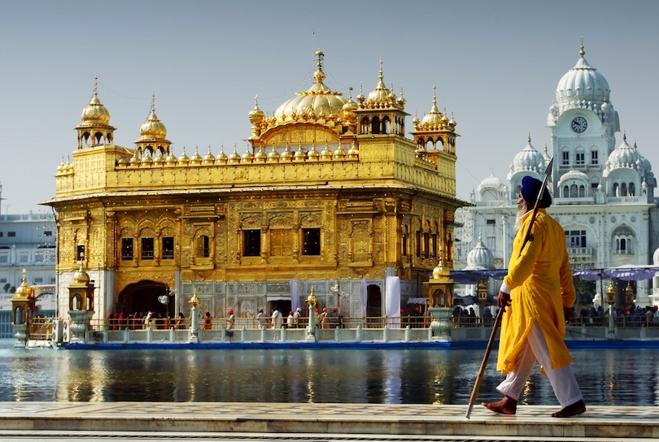
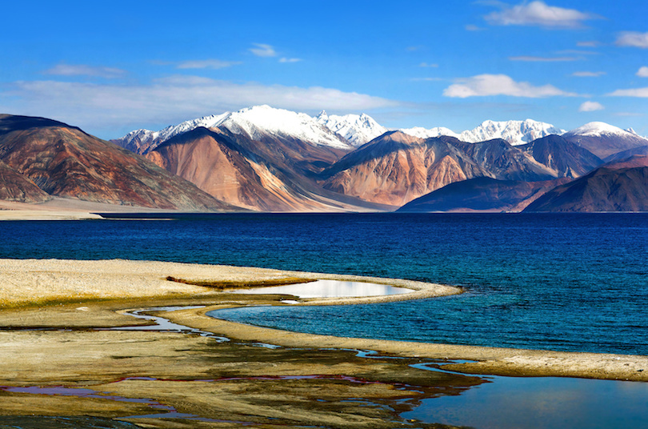
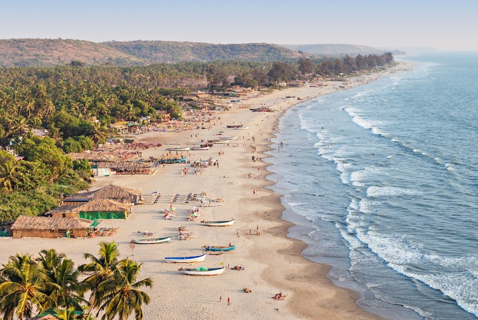

Amritsir Golden Temple
In the northern province of Punjab is Amritsar, a holy city and a mecca for the Sikh religion. The main attraction in Amritsar is the Golden Temple, also known as the Harmandir Sahib. Built more than 400 years ago, this temple truly is golden, and it is always packed with Sikhs visiting from around India and the rest of the world. You can tour the Golden Temple regardless of religion, but you will need to show respect by covering your head and removing your shoes. Enter the temple through the Ghanta Ghar, the main entrance, and admire the Amrit Sarovar, a pool surrounding the temple where pilgrims bathe.
Ladhak
In northernmost India, in the heavily disputed Kashmir region, is the mountainous destination of Ladakh. This region is large, but it has a low population density and a number of nomadic residents. Breathtaking, pristine scenery is a major draw to the area, but virtually all travelers will also spend time in the town of Leh. The town is located at a very high elevation, and it is also home to the 17th century Palace of the King of Ladakh. Buddhist culture is also prominent in Leh, and you may wish to explore some of the many Buddhist monasteries and temples in the Old Town.
Goa
On the western coast of India is Goa, a former colony of Portugal that blends Indian culture with colonial influences and plenty of international tourism. Goa is popular largely because of its spectacular beaches. The busiest and most popular of all is Candolim Beach, where travelers from around the world flock to soak up the sun. Anjuna Beach, by contrast, is far less crowded. It is also an amazing place where you can walk to Chapora Fort and admire the sandy coastline from a new perspective. Palolem is considered one of the most beautiful beaches in all of Goa with it’s natural bay surrounded by lofty headlands on either sides. Goa is widely loved by adventurers, and recreational activities are plentiful for those eager for some fun in the sun.